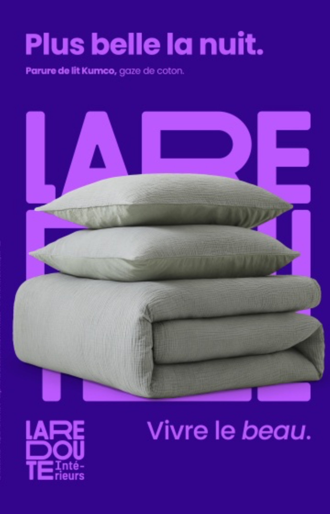

Fiches de cours · exercices de révision · 9 dossiers de TP · 8 tests avec corrigés. Tout le programme de linguistique française UNIL 2025 en un seul cahier.
R. Mahrer · UNIL 2025 · Elena Nikolic
Table des matières
Fiches de cours & exercices
IntroSémiologie, signe et niveaux d'analysep. 3
Ch. 1Phonétique, phonologie et graphémiquep. 5
Ch. 2La morphologiep. 7
Ch. 3Syntaxe de la clause canoniquep. 9
Ch. 4L'ordre dans la clausep. 11
Ch. 5Les types de clausesp. 13
Ch. 6Extensions du groupe nominalp. 15
Ch. 7Extensions du groupe verbalp. 17
Ch. 8La clause complexep. 19
Ch. 9La phrase graphiquep. 21
Travaux Pratiques
D1–D99 dossiers d'exercices pratiques (phonèmes → dislocations)→ p. 25
Tests & Examens
T1–T88 tests (Tests passés + examens types)→ p. 45
Corrigés
—Corrigés complets (Intro → Ch. 9)p. 23
Mode d'emploi
Chaque chapitre commence par une fiche de cours avec résumé, définitions et tableau récapitulatif. Les exercices suivent immédiatement : QCM, vrai/faux, textes à trous, correspondances et questions ouvertes. Les corrigés se trouvent à la fin du cahier pour que tu puisses travailler sans être tenté de regarder tout de suite.
Introduction
Sémiologie, signe et niveaux d'analyse
La linguistique comme science · Le signe saussurien · La double articulation · Les niveaux d'analyse
La linguistique est la science descriptive du langage humain : elle observe comment les gens parlent réellement, sans prescrire comment ils devraient parler.
Au cœur de la linguistique, le signe réunit une expression (forme perceptible : /ʃa/) et un contenu (concept mental : l'idée du chat). Ce lien est immotivé — rien dans /ʃa/ ne ressemble à un chat. Preuve : cat, Katze, gato désignent le même animal.
André Martinet a décrit la double articulation : 1ère articulation en morphèmes (unités avec sens), 2ème articulation en phonèmes (unités sans sens). Avec 37 phonèmes, le français génère des millions de mots.
Les niveaux d'analyse : phonologie → morphologie → syntaxe → clause (4 niveaux hiérarchiques). Sémantique et pragmatique sont des dimensions transversales, non des niveaux supplémentaires.
Définitions clés
Expression = forme perceptible (sonore ou graphique) du signe | Contenu = concept mental associé | Référent = objet réel (hors du signe)
Langue = propriétés répétables d'une langue | Parole = événements singuliers d'énonciation (Mahrer)
Concept
Définition
Exemple
Expression
Forme perceptible (sonore ou graphique)
/ʃa/ ou ‹chat›
Contenu
Concept mental associé
Idée du petit félin
Lien immotivé
Relation conventionnelle, non naturelle
chat ≠ cat ≠ Katze
1ère articulation
Décomposition en morphèmes (avec sens)
chant-eur-s → 3 unités
2ème articulation
Décomposition en phonèmes (sans sens)
/ʃ/+/ɑ̃/+/t/
Exercices
QCMExercice 1 — Choisir la bonne réponse
Entoure la lettre correspondant à la bonne réponse.
1. La linguistique est une science :
a) prescriptive — elle dit comment on doit parler
b) descriptive — elle observe comment les gens parlent réellement
c) normative — elle corrige les fautes
2. Le contenu d'un signe linguistique, c'est :
a) la forme sonore ou écrite du signe
b) l'objet réel dans le monde (le référent)
c) le concept mental associé au signe
3. La 2ème articulation décompose les morphèmes en :
a) syllabes
b) phonèmes
c) graphèmes
Texte à trousExercice 2 — Complète les phrases
Complète avec les mots suivants : immotivé · expression · contenu · langue · parole · double articulation
1. Le mot ‹chat› est l' du signe ; le concept de félin domestique en est le .
2. Le lien entre la forme et le sens est dit (non naturel) car rien ne l'impose naturellement.
3. La permet au français de générer des millions de mots avec seulement 37 phonèmes.
4. Les règles du football représentent la ; le match joué, c'est la .
Vrai / FauxExercice 3 — Vrai ou faux ?
Coche V (vrai) ou F (faux).
V F Le référent fait partie du signe linguistique.
V F Tous les signes linguistiques sont motivés par la réalité qu'ils désignent.
V F Les phonèmes ont un sens propre.
V F La sémantique étudie le sens des mots et des énoncés.
Question ouverteExercice 4 — Réponse développée
Expliquez pourquoi le lien entre l’expression et le contenu d’un signe est dit « immotivé ». Donnez deux exemples de langues différentes pour illustrer.
Chapitre 1
Phonétique, phonologie et graphémique
Phone vs phonème · Allophones · Paire minimale · Schwa · Graphèmes
Résumé visuel — 5 points clés
👂Phonétique : sons réels produits / perçus
🔤Phonologie : phonèmes = unités distinctives
✏️Graphémique : correspondances son-lettre
🔀Commutation : /p/→/b/ dans /pa/ ↔ /ba/
🗣️Traits distinctifs : voisé, nasal, labial…
Fiche de cours
La phonétique étudie les sons physiques (les phones). La phonologie étudie les sons distinctifs (les phonèmes) qui changent le sens dans une langue.
Une paire minimale prouve l'existence de deux phonèmes distincts : deux mots ne différant que d'un son (pain/bain). Le test s'appelle la commutation.
Deux phones qui sont des variantes du même phonème s'appellent des allophones (ex. : /ʁ/ dorso-vélaire (standard parisien), /r/ roulé (apicale, régionale) et /r/ grasseyé (uvulaire, historique/dialectale) = allophones de /ʁ/).
Le schwa /ə/ peut tomber sauf si sa chute crée 3 consonnes consécutives impossibles (règle des 3 consonnes).
La étudie les sons concrets du langage tels qu'ils sont produits physiquement. La étudie les sons distinctifs d'un système linguistique. Pour prouver que deux sons sont deux distincts, on applique le test de : si substituer un son change le sens, les deux sons sont distincts. Sinon, ce sont des du même phonème.
Question ouverteExercice 4 — Analyse
Donnez deux exemples de paires minimales en français et expliquez ce qu'elles prouvent.
🔬 Exercices de TP — Dossier 1
CommutationTP 1.1 — Commutation à partir de /lɑ̃ɡ/
À partir de /lɑ̃ɡ/ (« langue »), substituez un phonème pour former un autre mot. Notez chaque commutation et expliquez ce qu'elle prouve.
Transcrivez en API la 1re strophe de « Chanson d'automne » de Verlaine, puis identifiez les voyelles récurrentes et expliquez leur effet phonosymbolique.
Les sanglots longs / Des violons / De l'automne / Blessent mon cœur / D'une langueur / Monotone.
📝 Question de type examen
Examen — Test 1Phonologie du joual (Tremblay, 1981)
Lisez cet extrait du joual québécois et répondez aux questions :
« Si y'avait demandé quequ'chose, y l'arait eu ! Peut-être qu'y arait aimé ça que tu prennes toé-même les initiatives… »
a) Rétablissez la version standard et transcrivez les deux versions en API (5 pts).
b) Identifiez et nommez 4 phénomènes phonologiques propres au joual (5 pts).
c) Pourquoi Tremblay utilise-t-il cette graphie non standard ? (1 pt)
💡Productivité : règles appliquées à n'importe quel radical
Fiche de cours
La morphologie étudie la structure interne des mots. L'unité de base est le morphème : la plus petite unité porteuse de sens. Dans chanteurs : {chant-} + {-eur} + {-s} = 3 morphèmes.
Morphème libre : peut fonctionner seul (grand, maison). Morphème lié : doit s'attacher à une base (-eur, re-, -s).
Deux grandes familles : morphèmes lexicaux (portent le sens : {chant-}) et morphèmes grammaticaux (infos de grammaire : {-s} pluriel, {-ais} imparfait).
Flexion : adapte un mot à la grammaire sans créer un nouveau lexème (chante → chantaient). Dérivation : crée un nouveau lexème souvent avec changement de catégorie (chanter → chanteur).
Allomorphie : un même morphème a plusieurs formes selon le contexte. {in-} → impossible / illégal / irrégulier / inutile.
Procédé
Définition
Exemple
Flexion
Adapte sans changer le lexème
chante → chantaient
Dérivation suffixale
Base + suffixe, souvent change la catégorie
chanter → chant-eur (V→N)
Dérivation préfixale
Préfixe + base
heureux → mal-heureux
Composition
Base + base
porte-monnaie, chou-fleur
Mot-valise
Fusion avec troncation
brunch (breakfast+lunch)
Conversion
Changement de catégorie sans affixe
le manger (V→N)
Exercices
AnalyseExercice 1 — Segmentation en morphèmes
Décompose chaque mot en morphèmes en utilisant la notation { }. Indique la catégorie de chaque morphème (lexical / grammatical).
Expliquez l'allomorphie du préfixe {in-} avec au moins quatre exemples.
🔬 Exercices de TP — Dossier 2
AnalyseTP 2.1 — Désinences verbales
Identifiez et nommez le morphème grammatical souligné dans chaque forme verbale :
1. finit 2. aimera 3. aimons4. finissez
Oral/ÉcritTP 2.2 — Marques du pluriel
Pour « Les enfants mangeaient des pains au chocolat » : (a) transcrivez en API, (b) listez toutes les marques du pluriel à l'écrit et à l'oral, (c) quelle conclusion tirez-vous ?
Morphologie lexicaleTP 2.3 — Mots composés savants
Analysez la formation de : bronchiolite · hyperréactivité · technologie · dépollution. Pour chaque mot, identifiez les morphèmes, leur sens et leur type (lié / libre).
AnalyseTP 2.4 — Le langage schtroumpf
Dans le langage schtroumpf, la racine lexicale est remplacée par « schtroumpf » mais la syntaxe reste intacte. Qu'est-ce que cela prouve sur la distinction morphème lexical / morphème grammatical ?
📝 Question de type examen
Examen — Test 1Innovations lexicales en publicité (9 pts)
Analysez le procédé de formation de chaque lexème et justifiez par commutation :
a) « sublimitude » (Sephora) — Quel procédé ? Quel morphème ajouté ?
b) « découvRire » (festival d'humour) — Quel procédé ? Quelles bases fusionnées ?
c) « savoir-voyager » (transport) — Quel procédé de formation ?
d) « vivre le beau » (La Redoute) — Quel changement de catégorie grammaticale ?
La clause canonique est le modèle de référence : Sujet + Prédicat (Prédicat = GV en bloc : verbe + compléments). Ex. : Le chat mange la souris.
Les mots s'organisent en syntagmes : GN (groupe nominal, tête = nom), GV (groupe verbal, tête = verbe).
La valence d'un verbe = nombre d'actants requis : avalente (0 : il pleut), monovalente (1 : dormir), bivalente (2 : lire), trivalente (3 : donner).
Thème (TH) = info connue, ce dont on parle. Rhème (RH) = info nouvelle. Ordre neutre en français : TH avant RH.
Fonction
Test
Exemple
Sujet
C'est X qui V / pronom il/elle
Le chat mange
COD
Pronom le/la/les
Il lit un livre → Il le lit
COI
Pronom lui/leur/y/en
Il parle à Marie → Il lui parle
Circonstant
Mobile + supprimable
Le soir, il chante
Exercices
AnalyseExercice 1 — Identifier les fonctions
Indique la fonction de chaque groupe souligné : Sujet / COD / COI / Circonstant / Attribut.
1. Paul offre un livre à Marie. →
2. Paul offre un livre à Marie. →
3. Paul offre un livre à Marie. →
4. Le soir, Paul lit dans son canapé. →
5. Paul est médecin. →
ValenceExercice 2 — Quelle valence ?
Indique la valence de chaque verbe (0 = avalente, 1 = monovalente, 2 = bivalente, 3 = trivalente).
1. neiger :
2. partir :
3. aimer :
4. envoyer (qch à qn) :
Dans chaque phrase, souligne le Thème (TH) et entoure le Rhème (RH).
1. Mon chat ronronne toute la nuit.
2. Ce livre, je l'ai adoré.
3. Le lendemain, il repartit sans un mot.
🔬 Exercices de TP — Dossier 3
IdentificationTP 3.1 — Identifier les groupes syntaxiques
Identifiez la nature de chaque groupe syntaxique (GN, GAdj, GAdv, GPrép, GV) :
1. Les derniers habitants →
2. avec admiration →
3. fort intéressant →
4. très bien →
5. de tous côtés →
6. admirablement →
MichauxTP 3.2 — Rôles actantiels (mots inventés)
Lisez cet extrait de Michaux où tous les verbes sont inventés, puis identifiez l'agent, le patient, et les structures syntaxiques qui permettent la compréhension malgré l'absence de sens lexical :
« Il l'emparouille et l'endosque contre terre… Enfin il l'écorcobalisse. »
Chapitre 4
L'ordre dans la clause
Dislocation · Clivée · Pseudo-clivée · Passif · Construction impersonnelle
Résumé visuel — 5 points clés
📍Ordre canonique Sujet-Prédicat en français
🔄Thème (TH) vs Rhème (RH) : info donnée vs nouvelle
💡Clivée : «C'est X que…» → focus sur X
🔀Pseudo-clivée : «Ce que j'aime, c'est…»
↔️Topicalisation & dislocation = déplacement de TH
Fiche de cours
L'ordre neutre en français est Sujet-Prédicat (Prédicat = GV en bloc : Paul | mange une pomme). On peut le réorganiser pour mettre en relief certains éléments.
Dislocation gauche : Mon chat, il dort. — le thème est mis en avant. Dislocation droite : Il dort, mon chat. — précision après coup.
Clivée : C'est X qui/que… — focalise l'élément X.
Passif : être + PP. Le COD de l'actif devient sujet. L'agent peut être effacé.
Construction impersonnelle : Il V + sujet logique post-posé. Ex. : Il reste deux places.
Construction
Structure
Effet
Dislocation gauche
X, pronom V…
Thème emphatique
Dislocation droite
pronom V…, X
Précision / afterthought
Clivée
C'est X qui/que…
Focus sur X
Pseudo-clivée
Ce qui/que X, c'est Y
Contraste fort
Passif
être + PP (par agent)
Thématise le patient
Exercices
TransformationExercice 1 — Clivées
Transforme la phrase « Marie mange une pomme le matin » en trois clivées différentes (focalise le sujet, le COD, puis le circonstant).
TransformationExercice 2 — Passif
Transforme les phrases suivantes à la voix passive. Indique si l'agent est maintenu ou effacé.
1. Le chat mange la souris. →
2. Le jury a récompensé la meilleure actrice. →
3. On a volé mon vélo. →
IdentificationExercice 3 — Quelle construction ?
Identifie la construction utilisée dans chaque phrase.
1. Ce que j'aime, c'est le chocolat. →
2. Il reste encore des places. →
3. Ce livre, je ne l'ai pas lu. →
4. C'est Paul qui a écrit ce message. →
🔬 Exercices de TP — Dossier 4 (Valence)
AnalyseTP 4.1 — Valence d'« arracher » (Balzac)
Analysez la valence du verbe arracher dans : « Raphaël arracha la peau de chagrin des mains du vieillard. »
a) Combien d'actants ? Listez-les avec leur fonction et rôle actantiel.
b) Mettez à la forme passive. Quels changements syntaxiques et informationnels ?
Datif éthiqueTP 4.2 — Ramuz, Terre du ciel
Dans « l'allumette… vous tremble entre les doigts » (Ramuz) : qu'est-ce que le « vous » ? Est-ce un actant valenciel ? Quel est son rôle et son effet stylistique ?
📢Intonation & ponctuation marquent le type de clause
Fiche de cours
Quatre modalités de clause : déclarative (assertion), interrogative totale (oui/non) ou partielle (sur un constituant), impérative (ordre, sans sujet), exclamative (expression affective).
Une clause averbale n'a pas de verbe conjugué mais forme un acte complet : Silence ! / Au feu ! / Défense d'entrer.
Passif morphologique : être + PP, agent possible avec par. Ex. : Ce livre a été écrit par Proust. Passif pronominal : se + V, agent impossible. Ex. : Ça se dit.
Subordonnées : complétive (COD), circonstancielle (circonstant), relative (modificateur de N).
Type
Structure
Exemple
Déclarative
S V (C)
Il mange une pomme.
Interrogative totale
Est-ce que / inversion / ↗
Mange-t-il ?
Interrogative partielle
Mot-Q + inversion
Que mange-t-il ?
Impérative
V sans sujet
Mange ta pomme !
Exclamative
Comme / Que / Quel…
Comme il mange vite !
Averbale
GN / Infinitif seul
Silence ! / Ne pas fumer.
Exercices
IdentificationExercice 1 — Type de clause
Identifie le type de chaque clause.
1. Viens tout de suite ! →
2. Quand pars-tu ? →
3. Comme elle chante bien ! →
4. Défense de fumer. →
5. Il fait beau aujourd'hui. →
QCMExercice 2 — Passif morphologique ou pronominal ?
1. Ce produit se vend bien. — Peut-on ajouter « par quelqu'un » ?
a) Oui → passif morphologique
b) Non → passif pronominal
2. Ce roman a été écrit par Flaubert. — Quel type de passif ?
a) Passif morphologique (être + PP)
b) Passif pronominal (se + V)
Question ouverteExercice 3
Pourquoi « Silence ! » est-il considéré comme une clause même sans verbe ? Justifie.
🔬 Exercices de TP — Dossier 5 (Thème/Rhème)
Analyse DITP 5.1 — Thème / Rhème
Pour chaque paire, identifiez thème et rhème, puis indiquez dans quel contexte discursif chaque version est préférable :
a)Gustave Flaubert est l'auteur de Salammbô. vs L'auteur de Salammbô est Gustave Flaubert.
b)La tempête a déraciné le sapin. vs Le sapin a été déraciné par la tempête.
Identifiez le type de construction et l'élément focalisé dans chaque phrase :
A.C'est alors l'amour qui résout les contradictions. (Alain)
B.Ce qui existe, c'est l'individu. (Alain)
C.Voilà comment qu'ils m'ont traité les copains. (Céline)
📝 Question de type examen
Examen — Test 2Cendrars, L'Homme foudroyé (10 pts)
« Ce pauvre Léger, un quart d'heure auparavant, place d'Italie où je lui avais donné rendez-vous pour prendre le tramway, je lui avais déjà fait des remontrances au sujet de son déguisement. C'est de Fernand Léger, le peintre cubiste, que je parle. »
a) Décomposez la 1re phrase : clauses, constructions détachées, relatives, subordonnées.
b) Analysez « C'est de Fernand Léger que je parle » : quel type de construction ? Élément focalisé ?
c) Analysez les adjectifs épithètes : « pauvre », « cubiste ». Position et valeur de chacun.
✂️Test de suppression : extension ≠ argument obligatoire
Fiche de cours
Un GN minimal = Déterminant + Nom. On peut l'enrichir avec des extensions.
Épithète liée : adjectif directement rattaché au nom (un grand chat noir). Épithète détachée : séparée par une virgule, mobile (Fatiguée, elle dormit).
Relative déterminative (sans virgule) : restreint l'ensemble des référents. Le chat qui dort est paresseux. Relative explicative (avec virgules) : info accessoire sur un référent déjà identifié. Mon chat, qui aime dormir, est paresseux.
Pronoms relatifs : qui (sujet) / que (COD) / dont (compl. de de) / où (lieu/temps) / lequel (après prép.).
Extension
Exemple
Épithète liée
une belle maison rouge
Épithète détachée
Fatiguée, elle dormit
Relative déterminative
le livre que je lis
Relative explicative
ce livre, que j'adore, est épuisé
Apposition
Paris, capitale de la France
GPrép modificateur
la maison de mes parents
Exercices
Pronom relatifExercice 1 — Quel pronom relatif ?
Complète avec qui, que, dont, où, lequel/laquelle.
1. Le livre j'ai lu est passionnant.
2. La ville je suis né est magnifique.
3. L'auteur tout le monde parle a gagné le Goncourt.
4. La table sur il a posé son sac est fragile.
5. C'est l'ami m'a aidé à déménager.
Vrai / FauxExercice 2 — Relatives
V F Une relative déterminative peut être supprimée sans changer le sens essentiel.
V F Une relative explicative est placée entre virgules.
V F dont s'utilise quand le verbe de la relative se construit avec de.
AnalyseExercice 3 — Analyse du GN
Analyse le GN suivant en identifiant chaque constituant : « une vieille bouteille de vin rouge de Bourgogne »
🔬 Exercices de TP — Types et formes
PassifTP 6.1 — Formes passives (Dumas)
Dans cet extrait de Dumas, identifiez les formes passives, leur structure et leur valeur informationnelle :
« Deux ou trois coups furent portés de part et d'autre… Le coup fut paré. »
Examen — Déc. 2019Types de clauses (Giono, Le Grand Troupeau)
« Les bêtes couraient dans le couloir du chemin. À gauche : les prés. À droite : les buissons. Courir. Encore courir. Puis, soudain, s'arrêter. »
a) Identifiez le type de chaque clause (canonique, averbale, infinitive…).
b) Analysez l'effet stylistique et informationnel de la progression : tableau → infinitifs.
Le GV comprend le verbe + ses arguments. On peut y ajouter des circonstants — compléments facultatifs.
Trois critères du circonstant : supprimable (la clause reste grammaticale), mobile (déplaçable), multipliable (on peut en mettre plusieurs). Ex. : Il chante ici, le soir, avec joie.
Un circonstant en position initiale = cadre thématique : établit le contexte avant l'assertion.
Périphrases verbales : être en train de + inf. (progressif) / aller + inf. (futur proche) / venir de + inf. (passé récent) / devoir + inf. (obligation).
Périphrase
Valeur
Exemple
être en train de + inf.
Progressif (en cours)
Il est en train de manger.
aller + inf.
Ingressif / futur proche
Il va partir.
venir de + inf.
Résultatif récent
Il vient de finir.
devoir + inf.
Obligation / probabilité
Il doit travailler.
Exercices
TestExercice 1 — Circonstant ou argument ?
Pour chaque groupe souligné, dis s'il s'agit d'un circonstant (C) ou d'un argument obligatoire (A). Applique les trois tests.
1. Il habite à Paris. →
2. Il chante sous la douche. →
3. Il met son livre sur la table. →
4. Chaque matin, elle court. →
PériphrasesExercice 2 — Quelle valeur aspectuelle ?
Indique la valeur de chaque périphrase : progressif / futur proche / passé récent / obligation.
1. Elle vient de raccrocher. →
2. Le train va démarrer. →
3. Tu dois rendre ce devoir demain. →
4. Je suis en train de lire. →
Question ouverteExercice 3
Quels sont les trois critères permettant d'identifier un circonstant ? Illustre chacun avec un exemple tiré de « Il chante le soir dans le jardin. »
📝 Annales — Dislocation et DI
Examen — Déc. 2022Dislocation et dynamique informationnelle
Analysez et comparez les 3 constructions :
1.Cette femme, je la connais depuis toujours.
2.Je la connais depuis toujours, cette femme.
3.C'est cette femme que je connais depuis toujours.
a) Thème et rhème de chaque construction :
b) Quel contexte discursif (question implicite) correspond à chaque construction ?
🔄Récursivité de l’enchâssement (plusieurs niveaux)
🎯Complétives : que + ind./subj., interrogative indirecte
📚Circonstancielles conjonctives : valeurs temporelle, causale, finale, etc.
Fiche de cours
Une clause complexe contient plusieurs propositions liées par subordination (enchâssement d’une clause dans une autre). La coordination et le discours indirect sont traités au chapitre 9 (« La phrase graphique »).
La subordination enchâsse une clause dans une autre. Types de subordonnées :
Complétive (que + ind./subj.) → COD ou sujet
Circonstancielle → circonstant (quand, parce que, bien que…)
Relative → modificateur d'un nom
Interrogative indirecte → si / ce qui / ce que
Au discours indirect : changement de personne (je → il), de temps (futur → conditionnel), et de déictiques (demain → le lendemain).
Aide-mémoire
Conjonctions de coordination : mais · ou · et · donc · or · ni · car → « Mais où est donc Ornicar ? »
Exercices
IdentificationExercice 1 — Type de subordonnée
Identifie le type de chaque subordonnée soulignée.
1. Je sais qu'il viendra demain. →
2. Quand il pleut, je reste chez moi. →
3. L'homme qui chante est mon voisin. →
4. Je me demande s'il vient. →
5. Bien qu'elle soit fatiguée, elle travaille. →
TransformationExercice 2 — Discours indirect
Transforme au discours indirect.
1. Il a dit : « Je partirai demain matin avec mes amis. »
2. Elle a dit : « J'ai fini mes devoirs hier soir. »
AnalyseExercice 3 — Clause complexe complète
Analysez la clause complexe : « Bien qu'il soit épuisé, Paul, qui rentrait de voyage, prépara néanmoins le dîner. » Identifiez : la principale, chaque subordonnée et sa fonction.
📝 Annales — Clause averbale et DI
Examen — Test 2Perec, W ou le souvenir d'enfance
« Courir sur les cendrées, courir dans les marais, courir dans la boue. Courir, sauter, lancer les poids. Ramper. S'accroupir, se relever. (…) À plat ventre ! Debout ! Habillez-vous ! Déshabillez-vous ! »
a) Analysez la 1re phrase (infinitifs) : syntaxe, DI, effet de la progression ternaire.
b) Analysez « À plat ventre ! » : type de clause averbale, valeur, effet.
c) Comment la dégradation de la syntaxe (phrases longues → mots seuls) reflète-t-elle la dégradation humaine ?
Examen — Déc. 2022Clause à présentatif (Maupassant)
« Au carrefour, il y avait deux voitures. Les feux de l'une brillaient dans la nuit. C'étaient de vraies lanternes de cristal. »
a) Analysez « il y avait deux voitures » : type et valeur informationnelle.
b) Analysez « C'étaient de vraies lanternes de cristal » : distinguez-le d'une clivée.
c) Décrivez la progression thématique des 3 phrases.
Chapitre 9
La phrase graphique
Phrase graphique vs clause · Rôles de la ponctuation · 3 plans d'analyse
Résumé visuel — 5 points clés
✍️Phrase graphique : majuscule → ponctuation finale
Phrase graphique = unité graphique : majuscule → ponctuation forte (. ? ! …). C'est une notion orthographique.
Clause = unité linguistique centrée sur un prédicat verbal. Une phrase graphique peut contenir plusieurs clauses ; une clause peut être averbale.
Rôles de la ponctuation : syntaxique (virgule devant un circonstant antéposé), prosodique (pause), pragmatique (? et ! marquent l'acte de parole).
3 plans d'analyse d'un texte écrit :
1. Morphosyntaxique : clauses, syntagmes, fonctions
2. Topographique : mise en page, paragraphes
3. Pragmasyntaxique : TH/RH, dislocation, connecteurs
Erreur fréquente
On ne met PAS de virgule entre le sujet et son verbe : *Le chat, mange. est agrammatical.
Signe
Rôle syntaxique
Rôle pragmatique
Virgule
Sépare le circonstant antéposé
Délimite le thème
Point-virgule
Entre deux clauses coordonnées
Lien logique fort
Deux-points
Introduit explication / citation
Annonce ce qui suit
Guillemets
Encadrent le discours direct
Marque citationelle
? / !
Fin d'interrogative / exclamative
Acte de parole
Exercices
ComptageExercice 1 — Clauses vs phrase graphique
Pour chaque phrase graphique, indique le nombre de clauses qu'elle contient.
1. Il pleut. → clause(s)
2. Il pleut ; je reste chez moi. → clause(s)
3. Silence ! → clause(s)
4. Bien qu'il soit fatigué, Paul prépara le dîner. → clause(s)
PonctuationExercice 2 — Ponctuation correcte
Corrige les erreurs de ponctuation dans les phrases suivantes, si nécessaire.
1. Le chat, mange la souris. →
2. Le matin je prends un café. →
3. Il a dit « je pars demain ». →
Analyse sur 3 plansExercice 3 — Analyse complète
Analysez sur les 3 plans : « Les animaux, réfléchissez avant de les manger. »
Corrigés
Tous les exercices, dans l'ordre des chapitres.
Introduction — Sémiologie
Ex. 1 QCM1. b — 2. c — 3. b
Ex. 2 Trous1. expression / contenu — 2. immotivé — 3. double articulation — 4. langue / parole
Ex. 3 V/FF (le référent est hors du signe) · F (le lien est immotivé — non naturel, mais conventionnel) · F (les phonèmes n'ont pas de sens propre) · V
Ex. 4Le lien est immotivé (non naturel) car aucune relation physique n'unit l'expression au contenu. Ex. : « chien » / « dog » / « Hund » / « perro » désignent le même animal avec des formes radicalement différentes selon les langues.
Chapitre 1 — Phonologie
Ex. 1A→2 (son physique) · B→4 (unité distinctive) · C→1 (variante) · D→3 (2 mots ≠ d'un son)
Ex. 2 QCM1. b (1 seul phonème /o/) — 2. a (2 consonnes /ʒd/ → le schwa tombe)
Ex. 4Ex. : pain/bain (/p/ vs /b/) et sot/zoo (/s/ vs /z/). Elles prouvent que les deux sons sont des phonèmes distincts car leur substitution change le sens du mot.
Ex. 31. TH : Mon chat / RH : ronronne toute la nuit — 2. TH : Ce livre (disloqué) / RH : je l'ai adoré — 3. TH : Le lendemain / RH : il repartit sans un mot
Chapitre 4 — Ordre dans la clause
Ex. 11. C'est Marie qui mange une pomme le matin. — 2. C'est une pomme que Marie mange le matin. — 3. C'est le matin que Marie mange une pomme.
Ex. 21. La souris est mangée par le chat. — 2. La meilleure actrice a été récompensée par le jury. — 3. Mon vélo a été volé. (agent effacé)
Ex. 2 QCM1. b (passif pronominal, agent impossible) — 2. a (passif morphologique, être + PP)
Ex. 3« Silence ! » est une clause car elle réalise un acte communicatif complet (ordre/injonction). La définition moderne de la clause exige un prédicat, qui peut être nominal. L'absence de verbe conjugué n'empêche pas le statut de clause.
Chapitre 6 — Extensions du GN
Ex. 11. que — 2. où — 3. dont — 4. laquelle — 5. qui
Ex. 2 V/FF (déterminative non supprimable sans perte de sens) · V · V
Ex. 3Tête : bouteille / Dét. : une / Épithète : vieille / GPrép1 : de vin rouge de Bourgogne (tête : vin, épith. : rouge, GPrép2 : de Bourgogne)
Chapitre 7 — Extensions du GV
Ex. 11. A (argument de habiter, non supprimable) — 2. C — 3. A (argument de mettre) — 4. C
Ex. 31. Supprimable : « Il chante (le soir) » reste correct. 2. Mobile : « Le soir, il chante dans le jardin. » 3. Multipliable : « Il chante le soir dans le jardin avec joie. »
Ex. 2 DI1. Il a dit qu'il partirait le lendemain matin avec ses amis. — 2. Elle a dit qu'elle avait fini ses devoirs la veille au soir.
Ex. 3Principale : Paul prépara le dîner — Sub. concessive : Bien qu'il soit épuisé (circonstant) — Relative explicative : qui rentrait de voyage (modifie Paul) — Adverbe connectif : néanmoins
Ex. 21. Le chat mange la souris. (supprimer la virgule après chat) — 2. Le matin, je prends un café. (ajouter une virgule après matin) — 3. Il a dit : « Je pars demain. » (deux-points + guillemets)
Ex. 3Morphosyntaxique : GN Les animaux disloqué à gauche, repris par les (pronom COD) ; V impératif réfléchissez ; sub. infinitive circonstancielle temporelle avant de les manger. Topographique : une phrase graphique, virgule après le GN disloqué. Pragmasyntaxique : TH = Les animaux (cadrage thématique), RH = injonction ; effet rhétorique d'interpellation.
✦
Corrigés — TP & Examens
Réponses aux exercices de travaux pratiques et aux sujets d'examen
TP Chapitre 1 — Phonologie
TP 1.1 — Commutation/lɑ̃ɡ/ : substituer /l/→/b/ → /bɑ̃ɡ/ « banque » ; /ɑ̃/→/ɛ/ → /lɛɡ/ « legs » ; /ɡ/→/s/ → /lɑ̃s/ « lance ». Chaque substitution prouve que les phonèmes sont distincts en français.
TP 1.2 — Transcription API1. « Les enfants jouent dans la cour. » → [le.z‿ɑ̃.fɑ̃ ʒu dɑ̃ la kuʁ] — 2. « Je prends un café chaud. » → [ʒə pʁɑ̃ œ̃ ka.fe ʃo] — 3. « Elle vient de Paris. » → [ɛl vjɛ̃ də pa.ʁi]. Liaisons obligatoires : les_enfants [z‿], un_café [n‿].
TP 1.3 — Verlaine phonosymboliquePrédominance des voyelles hautes /i/ et nasales /ɑ̃, ɛ̃/ → impression de légèreté, mélancolie. Consonnes liquides /l, ʁ/ renforcent la fluidité sonore. La phonosymbolique souligne que la valeur expressive naît du contraste systémique, non de l'imitation directe.
Test 1 — Joual (Tremblay)Traits phonologiques du joual : amuïssement de /l/ dans les clitiques (y pour il), affrication /t,d/→[ts,dz] devant voyelles antérieures, diphtongaison des voyelles longues. Ces réalisations constituent un diasystème distinct du français standard ; elles portent une identité sociolinguistique québécoise marquée (cf. travaux de Labov : variation = structure sociale).
TP Chapitre 2 — Morphologie
TP 2.1 — Désinences verbalesParadigme de chanter présent : -e, -es, -e, -ons, -ez, -ent. Morphèmes de nombre/personne fusionnés ; distinction oral/écrit : /ʃɑ̃t/ = formes 1, 2, 3, 6 à l'oral ; la désinence -ent (P6) est graphique, muette. Morphème TAM : radical chant- + désinences = structure agglutinante partielle.
TP 2.2 — Oral/écrit plurielÀ l'oral, le pluriel est souvent marqué par le déterminant seul (les [le] vs le [lə]) ; la désinence -s est muette. Exceptions : liaisons (les enfants [lə.z‿ɑ̃.fɑ̃]) et alternances vocaliques (œil/yeux). L'écrit sur-marque le pluriel (désinences nominales et verbales graphiques sans correspondant phonique).
TP 2.3 — Mots composés médicauxEx. cardio-vasculaire : cardio- (gr. kardia = cœur) + vasculaire (lat. vasculum = petit vaisseau) → composition savante par télescopage de racines gréco-latines. Procédé productif en terminologie médicale : gastro-entérite, néphro-logie, hémato-logie. Contrairement aux composés populaires, le lien est formel (pas de mot-base autonome en français courant).
TP 2.4 — Langage schtroumpfLe verbe schtroumpfer illustre la productivité morphologique : radical nonce + désinences régulières du 1er groupe (schtroumpfe, schtroumpfons, schtroumpfé). Le nom schtroumpf prend le pluriel en -s. → Preuve que les règles morphologiques s'appliquent à n'importe quel radical (cf. test des mots-valise de Berko 1958 : wug/wugs).
Test 1 — Néologismes publicitairesProcédés identifiés : troncation (promo<promotion), dérivation (bio- + nom), mot-valise (Chocapic = chocolat+pic), emprunt à l'anglais (fresh, cool), siglaison (LCD). Effets : mémorisation, modernité, identification à une communauté de consommateurs (fonctions conative et poétique de Jakobson).
TP Chapitre 3 — Syntaxe de la clause canonique
TP 3.1 — Groupes syntaxiquesPhrase : Le vieux chat noir dort paisiblement sur le canapé. — GN sujet : [Le vieux chat noir] (Dét + Adj + N + Adj) — GV : [dort paisiblement sur le canapé] (V + Adv + GP) — GP circonstant : [sur le canapé] (Prép + GN). Fonctions : sujet (GN), prédicat (GV), circonstant locatif (GP).
TP 3.2 — Michaux / rôles actantielsDans « Un homme tranquille », Michaux déstabilise les rôles actantiels canoniques : le patient grammatical adopte des propriétés sémantiques d'agent (« la fatigue le voulait »). Analyse : sujet = expérienceur passif ; prédicat = verbe mental à sujet cause ; COD = cible. Effet : dissolution du sujet agentif, propre à l'esthétique michaldienne.
TP Chapitre 4 — Ordre dans la clause / Valence
TP 4.1 — Valence d'arracher (Balzac)Arracher : verbe trivalent — agent (N1), patient (N2), source/but (N3 à/de+GN). Ex. « Il lui arracha des mains la lettre » : N1=il (agent), N2=la lettre (patient), N3=lui … des mains (source). Chez Balzac, la construction est dramatisée par la postposition du patient et le datif source, créant un effet de saisissement brutal.
TP 4.2 — Datif éthique (Ramuz)Construction : « Il nous arrive de ces choses ! » — nous est datif éthique (non argument de la valence d'arriver) : marque l'implication affective du locuteur/allocutaire dans l'événement. Absent en français standard écrit soutenu, fréquent en registre oral et littéraire régional (Ramuz, romand). Ne commute pas avec un COI plein (*il arrive à nous avec même sens).
Test 2 — Cendrars & Examens décembre
Test 2 — Cendrars / Thème-RhèmeExtrait Prose du Transsibérien : organisation thème-rhème fragmentée, mimant le mouvement du train. TH progressif (le paysage devient rhème du vers précédent → thème du suivant). Clivées implicites (« C'est le silence ») isolent le rhème focal. Conclusion : la syntaxe informationnelle encode l'expérience cinétique et le dépaysement.
Déc. 2019 — Giono / Types de clausesPassage de Regain : 1. Clause déclarative canonique (« Le blé poussait ») — 2. Clause impérative averbale (« Silence ! ») — 3. Clause exclamative (« Comme c'est beau ! ») — 4. Clause interrogative totale (« Venez-vous ? »). Effet stylistique : alternance des types de clauses crée le rythme de la contemplation et de l'action.
Déc. 2019 — Camus / TélégrammeTélégramme de L'Étranger : « Mère décédée. Enterrement demain. Sentiments distingués. » — Clauses averbales nominales (NP seul, sans V ni Dét). Réduction syntaxique maximale → neutralité émotionnelle apparente de Meursault. Analyse : suppression du sujet et du prédicat verbal ; seules les têtes nominales subsistent. La parataxe et l'absence de subordination reflètent le détachement existentiel du personnage.
Déc. 2022 — Dislocation (3 constructions)« Cette femme, je l'admire. » → dislocation à gauche, topicalisation (TH cadre) + reprise par pronom COD. « Je l'admire, cette femme. » → dislocation à droite, thème post-rhématique, effet de rappel. « C'est cette femme que j'admire. » → clivée, rhème focal = cette femme, F(R) exhaustif. Toutes trois expriment le même contenu propositionnel mais avec des configurations information-nelles distinctes (Lambrecht 1994).
Test 2 — Perec / W ou le souvenir d'enfanceAlternance récit autobiographique (je, imparfait, analepse) / récit fictif (présent de narration, île W). Phrase graphique : Perec fragmente volontairement par tirets et parenthèses — la ponctuation mime la mémoire lacunaire. Extensions du GN : relatives emboîtées, appositions denses = surinformation compensatoire d'une mémoire défaillante.
Déc. 2022 — Présentatif MaupassantConstruction présentative : « Il y avait une fois… » / « Voici que… ». Fonction : introduire un référent nouveau dans le discours (rhème pur, sans thème préalable). Structure : présentatif (il y a, voici, c'est) + GN indéfini. Chez Maupassant, alterne avec la narration canonique pour marquer l'irruption de l'événement dans la banalité quotidienne (cf. théorie du fantastique de Todorov).
Travaux Pratiques
Polycopié de TP — Linguistique française UNIL 2025
9 dossiers d'exercices pratiques avec espaces de réponse et corrigés détaillés. T. Bornoz, M. Burger, F. Demont, M. Hoffmann, R. Mahrer, L. Möschler.
À partir de la suite phonologique /lɑ̃ɡ/ (« langue »), procédez à des opérations de commutation : substituez à l'un des trois phonèmes de /lɑ̃ɡ/ un autre phonème de façon à former un autre mot du français.
Trouvez au moins 6 substitutions valides (nouvelle suite phonologique + mot obtenu).
Que prouve cet exercice sur le statut des phonèmes ?
Exercice 2 — Transcription API — phrases
Transcrivez en API (Alphabet Phonétique International) les énoncés suivants :
a) Le jardinier a fauché les tulipes.
b) Je donnerai un xylophone au jeune musicien.
c) Tous leurs œufs sont vendus dès le matin.
Transcrivez chacun des trois énoncés.
Exercice 3 — Accent germanique — analyse des substitutions
Dans l'exemple suivant, quels sont les principes de substitution phonétiques mis en jeu pour représenter l'accent germanique ? Ces principes sont-ils appliqués de façon systématique ?
« Chai gru foir dud à l'heire le chénie de ma baufre Allemagne que che n'aurais chamais tû guidder. »
(Schmucke, dans Balzac, Le Cousin Pons, 1847)
Identifiez les substitutions phonétiques utilisées pour marquer l'accent germanique.
Ces principes sont-ils appliqués systématiquement ? Justifiez.
Exercice 4 — Virelangue — consonnes sibilantes
En vous basant sur le tableau des consonnes du français, expliquez la difficulté de ce virelangue :
Un chasseur sachant chasser sans son chien est un bon chasseur.
Identifiez les phonèmes qui se répètent et constituent la difficulté articulatoire.
Quelle propriété du système consonantique français explique-t-elle ?
Exercice 5 — Transcription API — Verlaine & phonèmes vocaliques
Transcrivez en API la première strophe de « Chanson d'automne » de Verlaine. Identifiez les phonèmes vocaliques récurrents.
CHANSON D'AUTOMNE
Les sanglots longs Des violons
De l'automne Blessent mon cœur
D'une langueur Monotone.
(Verlaine, Poèmes saturniens, 1866)
Transcrivez la strophe en API (tenez compte de la métrique).
Quels phonèmes vocaliques sont récurrents ? Classez-les selon les trois propriétés vocaliques.
Ces voyelles contribuent-elles au sens du poème ?
Corrigés · D1
Les phonèmes
Corrigés
Exercice 1 — Commutation à partir de /lɑ̃ɡ/
Quelques substitutions possibles (liste non exhaustive) :
• /lɑ̃ɡ/ → /lɑ̃ʃ/ → lanche (non-mot mais bien formé) ; /lɑ̃ s/ → lance ; /lɑ̃p/ → lampe
• /lɑ̃ɡ/ → /bɑ̃ɡ/ → bague ≈ ; /tɑ̃ɡ/ → tangue ; /ʁɑ̃ɡ/ → rang
• /lɑ̃ɡ/ → /laɡ/ → lague (non-mot) ; /lœɡ/ → non-mot ; /lɔɡ/ → log
Chaque substitution réussie confirme que l'élément remplacé est un phonème.
Exercice 2 — Transcription API — phrases
a) /lə ʒaʁdinje a foʃe le tylip/
b) /ʒə dɔ̃nʁe œ̃ gzilɔfɔ̃ o ʒœn myzisj ɛ̃/
c) /tu lœʁ ø sɔ̃ vɑ̃dy dɛ lə matɛ̃/
Points d'attention : liaisons (leurs œufs → /lœʁø/), e caduc (le, je), graphème <x> = /gz/ dans "xylophone".
Exercice 3 — Accent germanique — analyse des substitutions
Application non systématique : certains phonèmes français sont conservés sans substitution, l'auteur ne vise pas la rigueur phonologique mais l'effet comique / caractérisant.
Exercice 4 — Virelangue — consonnes sibilantes
Les phonèmes récurrents sont : /ʃ/ (ch) et /s/ (s, c). Ils s'alternent rapidement et leurs réalisations articulatoires sont très proches :
• /s/ : fricative alvéolaire non voisée
• /ʃ/ : fricative palato-alvéolaire non voisée
La différence se fait sur le seul point d'articulation (alvéolaire vs palatale). Le cerveau doit programmer des commutations très rapides entre deux gestes proches → risque de confusion. C'est une paire minimale dynamique.
Exercice 5 — Transcription API — Verlaine & phonèmes vocaliques
Classification : sons nasaux (/ɔ̃/, /ɑ̃/) — suggèrent une résonance sombre. Voyelles postérieures arrondies — sons graves. Effet phonosymbolique : les sons créent une atmosphère de plainte et de mélancolie, congruente avec le sens (automne, langueur, cœur blessé).
En comparant les formes les plus proches, déduisez le sens des morphèmes grammaticaux suivants :
–i– = …
–er– = …
–ons = …
–ez = …
Donnez la valeur de chaque morphème et un exemple de forme verbale qui le contient.
Exercice 2 — Oral vs écrit — marques du pluriel
Transcrivez en API l'énoncé suivant, puis analysez la distribution des marques du pluriel :
Les enfants mangeaient des pains au chocolat.
Transcription API de l'énoncé.
Quelles marques du pluriel sont présentes à l'oral ? À l'écrit ?
Exercice 3 — Morphologie lexicale — analyse de mots composés
Dans la publicité suivante, analysez la formation des mots : bronchiolite, hyperréactivité, technologie, dépollution. Utilisez des opérations de commutation comme dans le modèle :
Modèle : transplantation
trans– | –plant– | –ation
(préfixe de traversée | base : planter | suffixe nominalisateur)
Segmentez et analysez chaque mot : morphèmes + sens de chacun.
Dégagez les principaux champs sémantiques du texte publicitaire ci-dessous.
Exercice 4 — Le langage schtroumpf — morphèmes lexicaux vs grammaticaux
En vous appuyant sur la distinction entre morphèmes lexicaux et morphèmes grammaticaux, décrivez le fonctionnement du langage schtroumpf. Qu'est-ce qui assure la lisibilité de ce texte ?
(Peyo, Le Schtroumpfissime, 1977)
Dans le langage schtroumpf, quels types de morphèmes sont remplacés par « schtroumpf » ?
• -i- : marque de l’imparfait (et, en composition avec -er-, du conditionnel), déduit du paradigme parlions/parlons et parlerions/parlerons — ex. parl-i-ons (imparfait)
• -er- : marque du futur (temps), déduite du paradigme (présent dans parlerions/parlerons, absent de parlions/parlons) ; distincte de la valeur d’infinitif, non testée par ce paradigme — ex. parl-er-ons (futur)
• -ons : morphème de 1ère personne du pluriel — ex. aim-ons, finiss-ons
• -ez : morphème de 2ème personne du pluriel — ex. aim-ez, finiss-ez
Exercice 2 — Oral vs écrit — marques du pluriel
Transcription : /le zɑ̃fɑ̃ mɑ̃ʒɛ de pɛ̃ o ʃɔkɔla/
À l'écrit : pluriel marqué sur « les », « enfants » (-s), « mangeaient » (-aient), « des », « pains » (-s). À l'oral : seul le déterminant « les » (/le/) vs « le » (/lə/) marque le pluriel. La liaison les-z-enfants (/le zɑ̃fɑ̃/) aussi. Les -s finaux de « enfants » et « pains » ne se prononcent pas. La désinence « -aient » est homophones de « -ait » → le pluriel verbal est neutralisé à l'oral.
Conclusion : le français oral est beaucoup moins redondant que l'écrit pour les marques du pluriel.
Exercice 3 — Morphologie lexicale — analyse de mots composés
bronchiolite : bronchi(ole) (anatomie des voies respiratoires) + -ite (suffixe médical = inflammation) → inflammation des bronchioles hyperréactivité : hyper- (préfixe = excès) + réactivit(é) (base : réagir + -ité) → état d'excès de réaction technologie : techno- (grec : art, technique) + -logie (science de) → science de la technique dépollution : dé- (préfixe = inverse) + pollution → action d'éliminer la pollution
Champs sémantiques : ① santé / médecine (bronchiolite, hyperréactivité) ② environnement (dépollution, NOx, émissions) ③ technologie / innovation (technologie, système, AdBlue) ④ performance (réduction de 90%, normes européennes)
Exercice 4 — Le langage schtroumpf — morphèmes lexicaux vs grammaticaux
Dans le langage schtroumpf, la racine lexicale (le morphème porteur de sens, base du mot) est remplacée par « schtroumpf » ou ses variantes conjuguées (schtroumpfer, schtroumpfons, schtroumpfé…).
Ce qui reste intact :
① les morphèmes grammaticaux (désinences de conjugaison, marques de pluriel, accords) — « schtroumpf-er » reste un infinitif, « je schtroumpf-e » est 1ère pers. sg.
② la syntaxe (ordre des mots, structure de la clause) reste normale
③ les déterminants, prépositions, pronoms — « le grand schtroumpf »
La lisibilité est assurée par le contexte et par la structure morphosyntaxique conservée. On comprend le sens grâce à la construction même si on ne sait pas ce que « schtroumpfer » signifie exactement.
D3 · Référence : Polycopié : chapitre 3 → 2.1
Les syntagmes
Exercices
Exercice 1 — Identification des groupes syntaxiques
Définissez la nature des groupes syntaxiques soulignés (GN, GV, GAdj, GAdv, GPrép) dans chacun des énoncés suivants :
1. Les derniers habitants sont partis.
2. On la regardait avec admiration.
3. C'est un ouvrage fort intéressant.
4. Le vent agite les branches.
5. Des cris s'élèvent de tous côtés.
6. Il a fait de grands progrès.
7. Il répondit très bien.
8. Il joue admirablement.
Identifiez la nature grammaticale des expressions soulignées et comparez leur emploi standard avec la valeur adoptée dans le contexte. De quel mode de construction lexicale s'agit-il ?
1. (Colette) « […] qui patiente et perd le boire et le manger »
2. (De Gaulle) « c'est la sagesse et la raison de voir grand et de viser haut »
3. (Mallarmé) « Le vierge, le vivace et le bel aujourd'hui »
4. (Laclos) « le jeune homme est si Céladon »
5. (Boudard) « se rencardaient pour savoir le quoi du pour et du qu'est-ce »
6. (Goncourt) « Il "vachait" »
Quelle est la nature grammaticale originelle de chaque expression ? Quelle est sa valeur dans le texte ?
Comment appelle-t-on ce phénomène ?
Exercice 3 — Métrique et syntaxe — Racine vs Cendrars
Analysez le rapport entre métrique et syntaxe dans les deux extraits suivants. Y a-t-il concordance ou discordance entre frontières du vers et frontières du syntagme/de la clause ?
Identifiez 2-3 cas de concordance et 2-3 cas de discordance (enjambements, rejets) dans Racine.
Chez Cendrars, y a-t-il des frontières métriques régulières ? Comment la syntaxe s'organise-t-elle ?
Qu'est-ce qui distingue leurs écrits sur ce plan ?
Corrigés · D3
Les syntagmes
Corrigés
Exercice 1 — Identification des groupes syntaxiques
1. Les derniers habitants → GN (groupe nominal : dét. + adj. + nom)
2. avec admiration → GPrép (prép. + GN)
3. fort intéressant → GAdj (adv. intensifieur + adj.)
4. Le vent → GN
5. de tous côtés → GPrép
6. de grands progrès → GN (le GPrép de + GN est ici objet direct)
7. très bien → GAdv (adv. + adv.)
8. admirablement → GAdv (adverbe seul)
1. le boire et le manger : infinitifs (verbes) → nominalisés (GN, sujets de « perd »)
2. voir grand / viser haut : adjectifs/adverbes utilisés comme compléments de manière dans construction verbale
3. Le vierge, le vivace, le bel aujourd'hui : adjectifs et adverbe nominalisés (déterminant « le » + adj. → nom)
4. Céladon : nom propre (personnage) → adjectivé (attribut du sujet, valeur qualificative)
5. le quoi du pour et du qu'est-ce : pronoms/adverbes interrogatifs nominalisés
6. vacher : nom commun « vache » → verbalisé (conversion en verbe)
Phénomène : la conversion (ou dérivation impropre / transcatégorisation) — changement de catégorie grammaticale sans modification formelle du mot.
Exercice 3 — Métrique et syntaxe — Racine vs Cendrars
Racine (alexandrin = 12 syllabes) :
• Concordance (vers 5) : « Vous seul vous lui pouvez arracher cette envie. » → clause = vers entier
• Discordance (enjambement) : « l'aimable Bérénice / Va peut-être expirer dans les bras de Phénice. » → le GN sujet est en fin de vers 1, le GV en vers 2
• Rejet : « Elle n'entend ni pleurs, ni conseil, ni raison ; / Elle implore à grands cris le fer et le poison. » → la liste est découpée par la frontière du vers
Cendrars (vers libres) :
• Pas de mètre régulier, pas de rime obligatoire
• Les vers sont souvent des clauses entières, avec parfois des expansions très longues
• La syntaxe joue avec les répétitions anaphoriques (J'avais, J'étais, J'avais)
Distinction : Racine joue sur la tension entre la contrainte du vers classique et la syntaxe → effet dramatique. Cendrars use de la liberté moderne pour que chaque vers porte une unité de pensée.
D4 · Référence : Polycopié : chapitre 3, 2.2
Valence verbale et rôles actantiels
Exercices
Exercice 1 — Analyse de valence — constructions régulières et irrégulières
Analysez la valence des constructions verbales soulignées. Identifiez les cas irréguliers.
1. (Ophélie) « le cheval hennit » vs (Apollinaire) « ces nuages cabrés se prennent à hennir tout un univers de villes auriculaires »
2. (Gide) « une odeur âcre en émanait » vs (Céline) « si j'émanais des odeurs »
3. (Aragon) « les romanciers ont voulu parodier le monde » vs « l'auteur des Lettres provinciales a inventé… »
Pour chaque verbe, donnez la valence standard (consultez un dictionnaire si possible) et identifiez les écarts.
Quel effet de sens produisent les valences « imprévues » ?
Exercice 2 — Valence de trembler — le pronom « vous »
Décrivez la valence du verbe trembler dans l'extrait de Ramuz :
« l'allumette qu'on approche de la mèche vous tremble entre les doigts, laissant tomber les gouttelettes de soufre enflammé sur votre pantalon. »
(Ramuz, Terre du ciel, 1921)
Quelle est la valence de trembler dans cet emploi ?
Quelle est la fonction syntaxique et le rôle actantiel de « vous » ?
Commentez l'effet de ce pronom dans le récit.
Exercice 3 — Rôles actantiels dans Michaux — « Le Grand Combat »
Montrez comment l'analyse des rôles actantiels permet de donner sens à cet extrait :
Il l'emparouille et l'endosque contre terre ;
Il le rague et le roupète jusqu'à son drâle ;
Il le pratèle et le libucque et lui barufle les ouillais ;
Il le tocarde et le marmine,
Le manage rape à ri et ripe à ra.
Enfin il l'écorcobalisse.
(Michaux, « Le Grand Combat », Qui je fus, 1927)
Quelle est la particularité flagrante de ce poème ?
Comment peut-on néanmoins comprendre la scène ?
Qu'est-ce qui assure l'intelligibilité de ce texte ?
Corrigés · D4
Valence verbale et rôles actantiels
Corrigés
Exercice 1 — Analyse de valence — constructions régulières et irrégulières
1. hennir : verbe intransitif (0 actant ou 1 actant : le cheval) → chez Apollinaire, il prend un COD (« tout un univers »). Effet : transitivation poétique — les nuages deviennent des entités qui « émettent » un espace urbain, créant une métaphore synesthésique.
2. émaner : standard = intransitif + de (source) → chez Céline, il devient transitif direct (« émanais des odeurs »). Effet : registre familier / langue parlée, transgression syntaxique volontaire.
3. parodier : transitif standard → emploi standard chez Aragon. inventer : transitif direct à emploi absolu possible (créer quelque chose) → chez Balzac, emploi absolu ou au sens « découvrir ». Effet : glissement sémantique (inventer qch ≠ découvrir qch).
Exercice 2 — Valence de trembler — le pronom « vous »
La valence standard de trembler est monovalente (1 actant : le sujet qui tremble).
Ici, la construction est : [sujet : l'allumette] + [vous] + tremble + [entre les doigts]
« vous » est un datif éthique (ou datif d'intérêt) : pronom personnel qui n'est pas un actant valenciel mais marque l'implication affective du locuteur/narrateur dans l'action. Statut actanciel : hors valence — simple marqueur énonciatif d'implication (pas de rôle actanciel à proprement parler).
Effet dans le récit : le pronom « vous » interpelle directement le lecteur, le plonge dans l'action, crée une narration à la 2e personne implicite. L'expérience devient universelle et immédiate. Procédé d'implication du lecteur (technique de la focalisation 0 → 2).
Exercice 3 — Rôles actantiels dans Michaux — « Le Grand Combat »
Particularité : tous les verbes sont des mots inventés (néologismes : emparouiller, endosquer, rague, roupète, pratèle, libucquer, baruffle, tocarde, marmine…).
Compréhension malgré tout : grâce aux rôles actantiels :
• Agent constant : « il » (sujet) — l'agresseur
• Patient constant : « le / l' » (COD) — la victime
• Les verbes transitifs impliquent une action d'un sur l'autre
• Syntagmes prépositionnels (« contre terre », « jusqu'à son drâle ») donnent des indications spatiales
• Structure narrative : escalade de violence → « Enfin il l'écorcobalisse » (issue finale)
Intelligibilité : la structure syntaxique (Sujet-Prédicat) + les rôles actantiels (agent/patient) + les connecteurs (« Enfin ») maintiennent la compréhension globale de la scène de combat.
Expliquez en termes de dynamique informationnelle en quoi les énoncés suivants sont différents :
1a. Gustave Flaubert est l'auteur de Salammbô.
1b. L'auteur de Salammbô est Gustave Flaubert.
2a. La tempête a déraciné le sapin.
2b. Le sapin a été déraciné par la tempête.
Identifiez le thème et le rhème dans chaque paire.
Quand choisit-on 1a vs 1b ? 2a vs 2b ?
Exercice 2 — Clauses clivées et pseudo-clivées
Repérez les clauses inversées, clivées ou pseudo-clivées dans les textes proposés en cours, et appréciez l'effet de la dynamique informationnelle.
Exemples à analyser :
A. C'est alors l'amour, et au fond l'amour divin, qui résout les contradictions… (Alain)
B. L'idée n'existe pas. Ce qui existe, c'est l'individu. (Alain)
C. Voilà comment qu'ils m'ont traité les copains. (Céline)
D. Aussi déploya-t-elle une énergie fébrile… (Zola)
Identifiez le type de construction pour chaque exemple.
Quel est le thème, le rhème et la valeur informationnelle de chaque construction ?
Corrigés · D5
Dynamique informationnelle
Corrigés
Exercice 1 — Thème / Rhème — clauses canoniques
1a. Thème : Gustave Flaubert / Rhème : est l'auteur de Salammbô → on parle de Flaubert, on dit ce qu'il a fait
1b. Thème : L'auteur de Salammbô / Rhème : est Gustave Flaubert → on parle d'un auteur inconnu, on révèle son identité
2a. Thème : La tempête / Rhème : a déraciné le sapin → clause active, focus sur l'action de la tempête
2b. Thème : Le sapin / Rhème : a été déraciné par la tempête → clause passive, focus sur le sapin (patient)
Choix contextuel :
1a si on vient de parler de Flaubert (thème = connu)
1b si on vient de parler de Salammbô (auteur = nouveau)
2b si on vient de parler du sapin et qu'on veut le maintenir en thème
Exercice 2 — Clauses clivées et pseudo-clivées
A. C'est… qui… → clivée. Focus sur « l'amour divin » qui est extrait et mis en avant. Rhème = « l'amour divin ».
B. Ce qui existe, c'est l'individu → pseudo-clivée (relative libre + clivage). Focus sur « l'individu » comme rhème.
C. Voilà comment qu'ils m'ont traité → présentatif + dislocation (les copains = reprise). Emphase affective.
D. Aussi déploya-t-elle → inversion du sujet après connecteur consécutif. Marque le lien logique fort avec ce qui précède. Le sujet est en position rhématique.
D6 · Référence : Polycopié : chapitre 4, 2.3
Passif, impersonnel, pronominal
Exercices
Exercice 1 — Formes passives — Dumas
Repérez les formes passives, puis décrivez-les dans leur dimension syntaxique, sémantique et informationnelle. Commentez l'intérêt de ces structures pour la narration.
Deux ou trois coups furent portés de part et d'autre sans résultat, les étincelles jaillissaient par gerbes des épées. Enfin, d'Artagnan pensa que c'était le moment d'utiliser sa feinte favorite ; il l'amena fort habilement, l'exécuta avec la rapidité de l'éclair, et porta le coup avec une vigueur qu'il croyait irrésistible. Le coup fut paré.
(Dumas, Vingt ans après, 1845)
Identifiez les formes passives.
Décrivez leur structure syntaxique et leur valeur informationnelle.
Pourquoi le passif est-il intéressant ici du point de vue narratif ?
Exercice 2 — Agent effacé — Phèdre de Racine
Montrez l'enjeu de l'effacement de l'agent dans ces vers :
Que vois-je ? Quelle horreur dans ces lieux répandue
Fait fuir devant mes yeux ma famille éperdue ?
[…]
Parlez. Phèdre se plaint que je suis outragé.
Qui m'a trahi ? Pourquoi ne suis-je pas vengé ?
(Racine, Phèdre, acte III, scène 5)
Repérez les constructions où l'agent n'est pas exprimé.
Quel est l'effet dramatique de ces effacements ?
Exercice 3 — Constructions impersonnelles et pronominales
Identifiez le type de constructions pronominales dans ces vers :
Les feuilles mortes se ramassent à la pelle,
Les souvenirs et les regrets aussi […]
Et la vie sépare ceux qui s'aiment,
Tout doucement, sans faire de bruit.
(Prévert, Paroles, 1946)
Identifiez chaque construction pronominale et son type.
Quels effets produisent ces constructions ?
Corrigés · D6
Passif, impersonnel, pronominal
Corrigés
Exercice 1 — Formes passives — Dumas
Formes passives :
1. furent portés (coups) — passif avec auxiliaire être + participe
2. fut paré (le coup) — passif sans agent
Structure : être + participe passé (+ par + agent, si présent) Valeur informationnelle : « le coup » est en position thématique (sujet) → il est maintenu comme topic de la séquence. L'agent de la parade (l'adversaire de d'Artagnan) n'est pas nommé → agent effacé.
Intérêt narratif :
• Maintient le rythme : le passif court « Le coup fut paré » crée une clausule brusque, inattendue
• L'effacement de l'agent (qui a paré ?) crée un effet de surprise et de mystère
• Focus sur le résultat de l'action (la parade) plutôt que sur l'acteur
Exercice 2 — Agent effacé — Phèdre de Racine
Constructions avec agent effacé :
• « dans ces lieux répandue » (passive relative sans agent) — qui a répandu l'horreur ?
• « je suis outragé » (passif sans agent) — qui a commis l'outrage ?
• « ne suis-je pas vengé » (passif négatif) — qui devrait me venger ?
Effet dramatique :
• Thésée ne sait pas encore qui a commis l'acte → l'effacement de l'agent reflète son ignorance
• La non-nomination crée le suspense : le lecteur/spectateur sait que c'est Phèdre (accusation mensongère), mais Thésée l'ignore
• L'absence de l'agent dans « outragé » rend l'accusation indirecte et donc plus menaçante — Thésée ne désigne pas encore le coupable mais son interrogation ouvre la voie à la condamnation d'Hippolyte
Exercice 3 — Constructions impersonnelles et pronominales
• se ramassent : construction pronominale passive (les feuilles sont ramassées — agent indéfini/collectif)
• s'aiment : construction pronominale réciproque (ils s'aiment mutuellement)
Effets :
• « se ramassent » : neutralisation de l'agent → les feuilles semblent se ramasser d'elles-mêmes → personnification implicite, mélancolie
• L'anonymat de l'agent (« se ramassent à la pelle ») souligne l'automatisme de l'oubli
• « s'aiment » : la réciprocité souligne que l'amour est mutuel, ce qui rend la séparation plus tragique
Exercice 1 — Clauses averbales — Tintin et Albert Cohen
Repérez les clauses averbales et commentez leur effet dans les extraits suivants :
A. Cases de bande dessinée (Hergé, Tintin en Amérique, 1932)
B. (Albert Cohen, Belle du Seigneur, 1968) : « Donc elle et Hippolyte sur le canapé, l'invité sur le fauteuil du milieu, le plus confortable, Didi et sa femme sur les deux autres fauteuils. Entre le canapé et les fauteuils, le joli guéridon marocain avec les liqueurs, les cigarettes et les cigares de luxe. Oui, tout était en règle. »
Identifiez les clauses averbales dans l'extrait B.
Quel effet produisent ces clauses dans ce contexte narratif ?
Comment les clauses infinitives participent-elles essentiellement au sens de ce poème ?
AVARE
M'alléger
me dépouiller
réduire mon bagage à l'essentiel
Abandonnant ma longue traîne de plumes de plumages
de plumetis et de plumets
devenir oiseau avare
ivre du seul vol de ses ailes
(Leiris, Autres lancers, 1943)
Quel type de clause est prédominant ? Décrire sa structure.
Quelle valeur ces clauses apportent-elles au poème ?
Exercice 3 — Présentatif — Ramuz 1931 vs 1941
Comparez les deux versions de la même phrase de Ramuz et décrivez leurs différences :
Version 1931 : Il se retourna et vit Caille qui venait.
Version 1941 : Il se retourna ; c'était Caille qui venait.
Quel changement syntaxique Ramuz a-t-il opéré ?
Comment le présentatif c'était change-t-il le point de vue ?
Corrigés · D7
Les clauses atypiques
Corrigés
Exercice 1A — Clauses averbales — Tintin
⚠ L’extrait A (cases de bande dessinée, Hergé, Tintin en Amérique) requiert l’image du polycopié pour une analyse complète. Principes généraux : dans les bulles et légendes de BD, les clauses averbales nominales sont très fréquentes (ex. « Chute ! », « La frontière mexicaine »). Elles servent à annoter l’image de façon économique, à simuler la langue parlée ou les pensées brèves des personnages. Type dominant : thétiques (introduction d’un référent nouveau) et attributives (attribution d’une propriété sans verbe copule).
Exercice 1B — Clauses averbales — Albert Cohen
Clauses averbales dans l'extrait B :
• « elle et Hippolyte sur le canapé » → GN + GPrép (pas de verbe)
• « l'invité sur le fauteuil du milieu » → GN + GPrép
• « Didi et sa femme sur les deux autres fauteuils » → GN + GPrép
• « Entre le canapé et les fauteuils, le joli guéridon marocain avec les liqueurs… » → GPrép + GN
Effets :
• Style du plan de table / inventaire obsessionnel : la pensée de Mme Deume ordonne l'espace avec une précision maniaque
• Pas de verbe = pas d'action, seulement des positions statiques → reflet de la rigidité sociale des personnages
• Rythme bref, nominal → impression d'un discours intérieur (« vérification mentale »)
• Humour : l'absurde de la minutie contraste avec la finalité (« Oui, tout était en règle »)
Type prédominant : clauses infinitives sans sujet exprimé (sujet implicite = « je » du poète).
Structure : infinitif + (compléments)
• M'alléger = réfléchi
• me dépouiller = réfléchi
• réduire mon bagage à l'essentiel
• devenir oiseau avare
Valeurs :
① Indéfinition temporelle : l'infinitif ne marque pas de temps → les actions sont des aspirations intemporelles, non des actions datées
② Impersonnalité : le sujet « je » n'est pas dit → le désir devient universel
③ Valeur programmatique / délibérative : comme une liste d'intentions (« que faire ? ») → le poème est une résolution intérieure
④ Rythme : les infinitifs courts créent un rythme incisif, parcimonieux — en accord avec le titre « Avare »
Exercice 3 — Présentatif — Ramuz 1931 vs 1941
Changement : remplacement de « il vit Caille » (clause avec verbe de perception + sujet agent) par « c'était Caille » (clause à présentatif).
Analyse syntaxique :
V1931 : [il] [vit] [Caille qui venait] → construction transitive, sujet actif (il perçoit)
V1941 : [c'était Caille] → présentatif (être + GN), sans sujet percevant explicite
Changement de point de vue :
V1931 : focalisation sur le chemineau (il vit) → narration externe
V1941 : le présentatif efface le percevant et présente Caille directement au lecteur → focalisation interne, comme si le lecteur voyait lui-même apparaître Caille
Ramuz rapproche la narration de la conscience du personnage en éliminant la médiation du verbe de perception.
D8 · Référence : Polycopié : chapitre 6
Adjectifs épithètes et constructions détachées
Exercices
Exercice 1 — Placement des épithètes — texte scientifique vs littéraire
Comparez le placement des adjectifs épithètes dans les deux textes et commentez les tendances :
Texte 1 : (Raven et al., Biologie végétale) — texte scientifique
Texte 2 : (Balzac, Le Lys dans la vallée) — texte littéraire
Quelle est la position dominante des adjectifs dans le texte scientifique ? Et dans le texte littéraire ?
Comment expliquer ces tendances ?
Exercice 2 — Épithète détachée et apposition
Examinez les appositions et montrez en quoi elles contribuent à l'argumentation :
A. (Le Point) « Milan Kundera, l'une des plus grandes voix de la littérature mondiale, s'est éteint […]. L'écrivain franco-tchèque, auteur de romans incontournables, laisse un grand vide. »
B. (Chirac, 1995) « La France, patrie des Lumières et des Droits de l'Homme, terre d'accueil et d'asile, la France, ce jour-là, accomplissait l'irréparable. »
Identifiez le type de chaque construction détachée.
Quel rôle argumentatif jouent ces appositions ?
Corrigés · D8
Adjectifs épithètes et constructions détachées
Corrigés
Exercice 1 — Placement des épithètes — texte scientifique vs littéraire
Texte scientifique (Biologie végétale) :
• Position dominante : postposée (épithète après le nom) : « séquences différentes », « molécules protéiques », « types différents »
• Quelques antéposés : « une très faible partie », « un seul »
• Raison : clarté référentielle, classificatoire → l'adjectif restreint le nom
Texte littéraire (Balzac) :
• Mixture : antéposition (« double poésie », « heureux amour ») et postposition (« expression merveilleuse »)
• Adjectifs antéposés à valeur expressive/affective : « merveilleuse créature », « idéalement »
• Raison : l'antéposition littéraire est souvent expressive ou évocatrice
Tendances générales :
• Fr. standard : postposition (adjectif classificateur)
• Antéposition : adjectifs courts et fréquents (bon, grand, petit, beau…) ou valeur affective
Exercice 2 — Épithète détachée et apposition
A. Deux appositions nominales :
• « l'une des plus grandes voix de la littérature mondiale » → apposition à « Milan Kundera » : ajoute une évaluation superlative avant d'annoncer la mort → ampleur de la perte
• « auteur de romans incontournables » → apposition à « L'écrivain franco-tchèque » : rappelle l'œuvre → justifie le « grand vide »
B. « patrie des Lumières et des Droits de l'Homme, terre d'accueil et d'asile » → double apposition à « La France »
• Rappelle les valeurs fondatrices de la France AVANT d'énoncer la faute → effet de contraste maximal
• Stratégie rhétorique : établir la norme (apposition) puis montrer la transgression (« accomplissait l'irréparable »)
• La dislocation « La France, […], la France » crée une anaphore solennelle
D9 · Référence : Polycopié : chapitres 8–9
De la clause à la phrase — dislocations
Exercices
Exercice 1 — Segmentation syntaxique — Céline vs De Viau
Dans les deux textes suivants, identifiez les contours des phrases, des clauses et des propositions :
Texte 1 (Céline, Mort à crédit) : « Il me connaît bien Gustin. Quand il est à jeun il est d'un excellent conseil. Il est expert en joli style. On peut se fier à ses avis. Il est pas jaloux pour un sou. Il demande plus grand-chose au monde. Il a un vieux chagrin d'amour. Il a pas envie de le quitter. Il en parle tout à fait rarement. C'était une femme pas sérieuse. Gustin c'est un cœur d'élite. Il changera pas avant de mourir. »
Texte 2 (De Viau, « Élégie », 1623) : période longue avec de nombreuses subordonnées
Dans le texte de Céline, comment sont construites les phrases ? Décrivez la syntaxe.
Dans le texte de De Viau, quel est le principe de composition de la longue période ?
Qu'est-ce qui distingue ces deux écrits sur le plan de la syntaxe phrastique ?
Exercice 2 — Dislocations
Décrivez la composition des phrases suivantes et commentez l'organisation en termes de dynamique informationnelle :
1. « Les animaux, réfléchissez avant de les manger. »
2. « Il a pris l'habitude de la rencontrer dans la salle d'attente, la vieille mère Henrouille, Robinson. » (Céline)
3. « La mer, c'est le ciel même qui la colore. » (Billy)
4. « Cette maladie du soupçon, Maurice, autrefois d'esprit dégagé, venait de la contracter lui aussi […]. » (Zola)
5. « Et le livre des Saints Évangiles, que l'apôtre gardait précieusement sous une couverture pourpre, marquée d'une croix d'or, l'océan l'engloutit. » (France)
Identifiez le type de dislocation (gauche ou droite) dans chaque exemple.
Quel est l'effet de dynamique informationnelle dans chaque cas ?
Corrigés · D9
De la clause à la phrase — dislocations
Corrigés
Exercice 1 — Segmentation syntaxique — Céline vs De Viau
Céline :
• Phrases courtes, monoclauses ou biclauses
• Juxtaposition (pas de connecteurs logiques entre les clauses)
• « Il me connaît bien Gustin » → dislocation à droite : « Gustin » reprend le clitique « il » (reprise pronominale = critère de dislocation ; à distinguer de l'apposition, sans pronom repris)
• « Gustin c'est un cœur d'élite » → dislocation à gauche + présentatif
• Style oral, populaire → syntaxe fragmentée, parataxique
• Bilan : nombreuses phrases graphiques = une clause chacune, enchaînement par juxtaposition
De Viau :
• Période longue (une seule phrase graphique couvrant de nombreux vers)
• Structure : protase (accumulation de subordonnées temporelles « Lorsque…, Que…, Quand… ») → apodose (« Je verrai ma Caliste… »)
• Complexité hypotaxique → syntaxe savante, latinisante
1. « Les animaux » → dislocation à gauche — thème préposé, repris implicitement dans « les manger ». Effet : interpellation frappante, thème établi avant la clause injonctive.
2. « la vieille mère Henrouille, Robinson » : deux dislocations à droite distinctes — « Robinson » reprend le sujet « il » ; « la vieille mère Henrouille » reprend le COD « la ». Pas d'apposition (sans pronom repris).
3. « La mer » → dislocation à gauche + clivée (« c'est le ciel même qui… »). Thème = la mer, rhème = c'est le ciel qui la colore → focalisation sur le rhème inattendu.
4. « Cette maladie du soupçon, Maurice » → double dislocation à gauche (sujet + apposition). Thème complexe établi en tête, suspense avant le rhème (verbe en fin).
5. Long GN détaché → dislocation à gauche + reprise par « l'océan l'engloutit ». Effet dramatique : l'objet précieux est longuement décrit avant d'annoncer sa perte.
Tests & Examens
Tests passés + examens types UNIL 2025
Retrouve ici les tests passés en cours avec corrigés détaillés, ainsi que des examens types pour t'entraîner dans les conditions réelles.
La Grosse Femme d'à côté est enceinte, Michel Tremblay (1981).
– Si y'avait demandé quequ'chose, y l'arait eu !
– Peut-être qu'y arait aimé ça que tu prennes toé-même les initiatives… Quand y font rien, des fois, c't' à toé de te débrouiller.
(a)Rétablissez la version en français standard. Transcrivez en API les deux versions (originale et standard).5 pts
Transcription IPA — symboles phonétiques du français : Cours → Phonologie
Les crochets [ ] délimitent une transcription phonétique (réalisation concrète)
Joual : variété de français québécois — amuïssement du /l/ pronominal, relâchement vocalique, chute du schwa
(a) Rétablissez la version en français standard. Transcrivez en API les deux versions (originale et standard). 5 pts
(b) Repérez toutes les différences phonologiques entre le joual et le français standard, et décrivez-les. 5 pts
(c) Commentez : que représente la graphie non standard utilisée par Tremblay et pourquoi y recourir ? 1 pt
Q.2 — Innovations lexicales en publicité 9 pts
Support — 4 affiches publicitaires

→ « beau » Adj → N (conversion)
(a) Identifiez et analysez le mode de construction des lexèmes «sublimitude», «découvRire», «savoir-voyager», «beau». Pour les cas de dérivation, procédez par commutation. 8 pts
(b) Pourquoi recourir à de telles innovations lexicales en communication dans l'espace public ? 1 pt
test1
Test 2 — 12 décembre 2025
Score : 7,5 / 20 · Note 3/6
Questions
Q.1 — Syntaxe et DI : Cendrars, L'homme foudroyé 10 pts · obtenu : 2
Texte support
« Ce pauvre Léger, un quart d'heure auparavant, place d'Italie où je lui avais donné rendez-vous pour prendre le tramway, je lui avais déjà fait des remontrances au sujet de son déguisement. C'est de Fernand Léger, le peintre cubiste, que je parle. Cela faisait des mois que Fernand, ce gros lambin si sympathique, me tannait pour que je le mène voir les Gitanes. »
(a)Analysez la composition de la première phrase : nombre et type de clauses, constructions détachées.
Syntaxe de la phrase complexe — Cours → Syntaxe : clause principale, subordonnées, constructions périphériques
Construction détachée : élément séparé par virgule, périphérique à la clause principale
Dislocation gauche : SN en tête de phrase repris par un pronom dans la clause principale → valeur thématique
Clause averbale : pas de verbe conjugué (ex. circonstanciel locatif seul)
Subordonnée relative : introduite par pronom relatif (où, qui, que…)
Subordonnée finale : « pour + infinitif » → but
(a) Analysez la composition de la première phrase : nombre et type de clauses, constructions détachées.
(b) Même analyse pour la deuxième phrase.
(c) Soulignez les adjectifs épithètes et commentez leur sens selon leur position (antéposé / postposé).
(d) Quelle image le narrateur donne-t-il de lui-même et de Léger dans cet extrait ?
Q.2 — Syntaxe et DI : Perec, W ou le souvenir d'enfance 10 pts · obtenu : 5,5
Texte support
Phrase soulignée = 1re phrase · Phrase en gras = « À plat ventre ! »
Courir sur les cendrées, courir dans les marais, courir dans la boue. Courir, sauter, lancer les poids. Ramper. S'accroupir, se relever. Se relever, s'accroupir. Très vite, de plus en plus vite. Courir en rond, se jeter à terre, ramper, se relever, courir. Rester debout, au garde-à-vous, des heures, des jours, des jours et des nuits. À plat ventre ! Debout ! Habillez-vous ! Déshabillez-vous ! Habillez-vous ! Déshabillez-vous ! Courez ! Sautez ! Rampez ! À genoux !
(b) Analysez la phrase « À plat ventre ! » : syntaxique, sémantique, informationnel.
(c) Commentez la progression du passage dans son ensemble.
test2
Bilan des erreurs récurrentes
Questions
⚠️ Note : Les exercices suivants sont des exercices de synthèse construits sur le modèle des annales UNIL. Ils ne reproduisent pas verbatim les épreuves passées.
test3
Exercice de synthèse 1 — Phonologie & Morphologie
Score : Texte corrigé fourni
Questions
Q.1 — Phonologie : le parler de Chaval 10 pts
Contexte
Chaval est un personnage de bande dessinée dont le parler se caractérise par une substitution systématique des voyelles. Dans ses répliques, les voyelles /o/, /u/, /ø/, /y/ (voyelles postérieures et arrondies) sont toutes remplacées par /a/.
— « Ja vas ta traver la tate, ta ta canailla ! » (pour : « Je veux te trouver la tête, toi, canaille ! »)
(a)Rétablissez la version en français standard. Transcrivez en API les deux versions (originale et standard) pour la réplique donnée.4 pts
Transcription IPA — Cours → Phonologie : crochets [ ] pour phonétique, barres / / pour phonologique
Toutes remplacées par /a/ (voyelle ouverte antérieure non-arrondie)
(a) Rétablissez la version en français standard. Transcrivez en API les deux versions (originale et standard) pour la réplique donnée. 4 pts
(b) Décrivez le trait phonologique partagé par toutes les voyelles substituées (/o/, /u/, /ø/, /y/). Pourquoi /a/ est-il le terme de substitution ? 4 pts
(c) Ce changement est-il phonologique ou phonétique ? Justifiez avec le concept de paire minimale. 2 pts
Q.2 — Morphologie : néologismes du Chat (Geluck) 10 pts
Support — néologismes extraits des albums de Geluck
« Je prône le protectionnement des droits linguistiques. »
« Le gouvernement a enrichi son langabulaire. »
« Ce projet est totalement inacceptuel. »
« Votre créativitude m'impressionne. »
(a)Pour chacun des quatre néologismes, identifiez le procédé de formation, décomposez les morphèmes et procédez par commutation pour les dérivations.8 pts
Dérivation par suffixation : base + suffixe → nouveau lexème
Mot-valise : fusion de deux bases avec chevauchement phonologique
Commutation : vérifier la productivité du suffixe en le remplaçant dans d'autres mots
(a) Pour chacun des quatre néologismes, identifiez le procédé de formation, décomposez les morphèmes et procédez par commutation pour les dérivations. 8 pts
(b) Quelle est la fonction de ces néologismes dans le registre comique de Geluck ? 2 pts
test4
Exercice de synthèse 2 — Valence & Rôles actanciels
Score : Corrigé officiel fourni
Questions
Q.1 — Valence et rôles actanciels : Balzac, La Peau de chagrin 8 pts
Texte support
« Raphaël arracha la peau de chagrin des mains du vieillard. »
Honoré de Balzac, La Peau de chagrin (1831)
(a)Analysez la valence du verbe « arracher ». Combien d'actants comporte-t-il ici ? Identifiez chacun avec son rôle actanciel et sa fonction syntaxique.5 pts
Valence — Cours → Syntaxe : nombre d'actants qu'un verbe exige pour que son sens soit complet
Distincts des circonstants (facultatifs, déplaçables, supprimables sans modifier la structure)
Rôles actanciels : AGENT (animé instigateur), AGI (inanimé sur lequel s'exerce le procès), SOURCE (provenance, lieu ou personne d'où on prend)
Test : peut-on supprimer l'actant sans que la clause soit incomplète ?
(a) Analysez la valence du verbe « arracher ». Combien d'actants comporte-t-il ici ? Identifiez chacun avec son rôle actanciel et sa fonction syntaxique. 5 pts
(b) Réécrivez la clause à la voix passive. Quels changements syntaxiques et informationnels observe-t-on ? 3 pts
Q.2 — Types de clauses : Giono, Le Grand Troupeau 6 pts
Texte support
« Les bêtes couraient dans le couloir du chemin. À gauche : les prés. À droite : les buissons. Courir. Encore courir. Puis, soudain, s'arrêter. »
Jean Giono, Le Grand Troupeau (1931)
(a)Identifiez et nommez le type de chaque clause du passage. Pour les clauses averbales, précisez leur sous-type.4 pts
Types de clauses — Cours → Syntaxe : canonique (S-V), inversée, averbale, infinitive, participiale
Clause averbale : sans verbe conjugué → sous-types : existentielle (il y a), attributive (Adj + GN), injonctive (ordre elliptique), thétique (GN seul, 1 terme)
Clause infinitive : verbe à l'infinitif sans sujet explicite
(a) Identifiez et nommez le type de chaque clause du passage. Pour les clauses averbales, précisez leur sous-type. 4 pts
(b) Commentez l'effet stylistique et informationnel de l'alternance entre clauses canoniques et non-canoniques dans ce passage. 2 pts
« Aujourd'hui, maman est morte. Ou peut-être hier, je ne sais pas. J'ai reçu un télégramme de l'asile : « Mère décédée. Enterrement demain. Sentiments distingués. » »
Albert Camus, L'Étranger (1942)
(a)Analysez chacune des trois clauses du télégramme : type, structure, valeurs sémantique et informationnelle.4 pts
Clause averbale : pas de verbe conjugué → plusieurs sous-types selon la structure
Thétique : GN seul, pose l'existence d'un référent = entièrement rhématique
Attributive : GN + attribut (Adj ou GN)
Le télégramme contraint l'ellipse → toute la structure verbale est supprimée
(a) Analysez chacune des trois clauses du télégramme : type, structure, valeurs sémantique et informationnelle. 4 pts
(b) Commentez le contraste informationnel entre la première phrase du roman (« Aujourd'hui, maman est morte. ») et les clauses du télégramme. 2 pts
test5
Exercice de synthèse 3 — Dislocation & Dynamique informationnelle
Score : Corrigé officiel fourni
Questions
Q.1 — Dislocation et dynamique informationnelle 10 pts
Texte support
« Cette femme, je la connais depuis toujours. »
« Je la connais depuis toujours, cette femme. »
« C'est cette femme que je connais depuis toujours. »
(a)Analysez les trois constructions : identifiez leur type (dislocation gauche, dislocation droite, clivée), décrivez la structure et précisez le rôle informationnel de chaque élément (thème/rhème).6 pts
Dislocation gauche — Cours → DI / Dislocation : GN autonome EN TÊTE repris par pronom → THÈME (info connue, point de départ)
Dislocation droite : GN autonome EN QUEUE repris par pronom dans la clause → valeur de RAPPEL ou d'IDENTIFICATION du référent
Clause clivée : c'est + [élément focalisé] + qui/que → RHÈME (info nouvelle, mise en relief)
(a) Analysez les trois constructions : identifiez leur type (dislocation gauche, dislocation droite, clivée), décrivez la structure et précisez le rôle informationnel de chaque élément (thème/rhème). 6 pts
(b) Dans quel contexte discursif chacune de ces constructions serait-elle la plus naturelle ? Formulez la question implicite à laquelle chaque construction répond. 4 pts
Q.2 — Clause à présentatif (feux de voiture) 10 pts
Texte support
« Au carrefour, il y avait deux voitures. Les feux de l'une brillaient dans la nuit. C'étaient de vraies lanternes de cristal. »
(a)Analysez « il y avait deux voitures » : type de clause, valeur informationnelle du présentatif, structure.4 pts
Clause à présentatif — Cours → Syntaxe Ch.5 : il y a = présentatif existentiel. Pose l'existence d'un référent → entièrement rhématique
Valeur : introduire un référent nouveau dans le discours (première mention)
Déterminant indéfini après le présentatif = confirme première mention
(a) Analysez « il y avait deux voitures » : type de clause, valeur informationnelle du présentatif, structure. 4 pts
(b) Analysez « C'étaient de vraies lanternes de cristal » : identifiez le type de construction, distinguez-la d'une clivée, commentez son effet informationnel. 4 pts
(c) Commentez la progression informationnelle des trois phrases du passage dans leur ensemble. 2 pts
test6
Exercice de synthèse 4 — Phonologie & Morphologie
Score : Corrigé officiel fourni
Questions
Q.1 — Phonologie : le e-caduc chez Rictus 10 pts
Texte support — Jehan Rictus, Complainte de l'oubli des pauvres (1897)
« Pleure pas ! C'est la vie !
Pleure pas ! C'est la vie !
L' bonhomm' qu'on a vu pleurer,
C'est p't-êtr' que l'espoir l'a quitté. »
Rictus écrit phonétiquement le parler populaire parisien fin XIXe.
(a)Relevez tous les e-caducs (e graphiques) dans ce passage. Pour chacun, indiquez s'il est réalisé ou omis, et expliquez pourquoi selon la règle des trois consonnes.6 pts
E caduc (schwa) — Cours → Phonologie 1.4 : voyelle /ə/ dont la réalisation est variable
Règle des 3 consonnes (sur les sons, pas les lettres !) :
— En fin de groupe syntaxique → toujours omis
— Suivi d'une voyelle → tombe
— OBLIGATOIRE si sa chute crée 3+ consonnes d'affilée
— FACULTATIF si sa chute crée seulement 2 consonnes
La graphie de Rictus (apostrophes) transcrit déjà les omissions populaires
(a) Relevez tous les e-caducs (e graphiques) dans ce passage. Pour chacun, indiquez s'il est réalisé ou omis, et expliquez pourquoi selon la règle des trois consonnes. 6 pts
(b) Que représente la graphie non-standard de Rictus (apostrophes, omissions) du point de vue sociolinguistique ? Quelle variété de langue est transcrite ? 2 pts
(c) Transcrivez phonétiquement (IPA entre crochets) la première strophe en français standard, puis en parler Rictus. 2 pts
Q.2 — Morphologie : « démocrature » 10 pts
Contexte
Le néologisme « démocrature » est apparu dans les médias politiques francophones pour désigner un régime qui se présente comme démocratique mais qui fonctionne comme une dictature.
(a)Identifiez le procédé de formation de « démocrature ». Décomposez les éléments constitutifs et montrez le mécanisme morphologique en jeu.6 pts
Mot-valise : fusion de deux formes avec CHEVAUCHEMENT ou troncation d'au moins un élément
Chercher les deux mots sources : démocratie + dictature
Localiser le chevauchement phonologique ou la troncation
≠ composition : dans un composé, les deux bases sont intégrales
(a) Identifiez le procédé de formation de « démocrature ». Décomposez les éléments constitutifs et montrez le mécanisme morphologique en jeu. 6 pts
(b) Comparez avec « covoiturage » et « informatique » : sont-ils aussi des mots-valises ? Distinguez les procédés en jeu. 4 pts
test7
Examens blancs difficiles — Format rattrapage
Score : Réponses officielles disponibles
Questions
Q.1 — Phonologie : Aristide Bruant, A la Villette 7 pts
Texte support — Aristide Bruant, chansonnier montmartrois (fin XIXe)
« J'connais une fill' à la Villette,
A s'appell' Nini peau d'chien,
A n'est pas b'lle, mais à la rigolette,
C'est elle qu'on aim' le mieux, ben ! »
(a)Transcrivez phonétiquement en API le deuxième vers en parler populaire (tel qu'il est orthographié) et en français standard.3 pts
(a)Pour « cryptomonnaie », « néobanque » et « désintermédiation », identifiez le procédé de formation, décomposez les morphèmes et procédez par commutation pour les affixes.5 pts
(a) Pour « cryptomonnaie », « néobanque » et « désintermédiation », identifiez le procédé de formation, décomposez les morphèmes et procédez par commutation pour les affixes. 5 pts
(b) « Financer » est utilisé ici comme verbe transitif. Quel procédé morphologique cela illustre-t-il ? Donnez deux autres exemples du même procédé. 2 pts
Q.3 — Syntaxe : analyse clausale 6 pts
Texte support
« Le tableau qu'il avait acheté pour une misère, c'est à Paris qu'il l'avait trouvé. »
(a)Analysez la totalité de cette phrase complexe : clauses, fonctions, constructions détachées, dynamique informationnelle.6 pts
Phrase complexe : identifier chaque clause (combien de verbes conjugués ?)
Dislocation gauche : GN en tête repris par pronom → THÈME
Relative restreinte : « qu'il avait acheté » = clause relative enchâssée dans le GN thème
Clivée : « c'est X que P » → RHÈME = X
(a) Analysez la totalité de cette phrase complexe : clauses, fonctions, constructions détachées, dynamique informationnelle. 6 pts
Q.1 — Syntaxe : constructions détachées dans la presse 10 pts
Texte support — titre et chapeau de presse
« Fatigués, désabusés, les électeurs ont boudé les urnes. »
« Ces résultats, personne ne les avait anticipés. »
« C'est la démission du premier ministre qui a tout précipité. »
(a)Analysez chaque phrase : identifiez le type de construction en gras, sa valeur informationnelle, et ses propriétés syntaxiques (déplaçable ? supprimable ? reprise pronominale ?).7 pts
Dislocation gauche : GN + [,] + clause avec pronom → thématisation
Clause clivée : c'est X qui P → focalisation rhématique
(a) Analysez chaque phrase : identifiez le type de construction en gras, sa valeur informationnelle, et ses propriétés syntaxiques (déplaçable ? supprimable ? reprise pronominale ?). 7 pts
(b) Réécrivez la deuxième phrase sans dislocation. Quelle valeur informationnelle est perdue ? Dans quel contexte discursif la dislocation gauche est-elle préférable ? 3 pts
Q.1 — Analyse combinée : Apollinaire, Le Pont Mirabeau 10 pts
Texte support
« Sous le pont Mirabeau coule la Seine
Et nos amours
Faut-il qu'il m'en souvienne
La joie venait toujours après la peine »
Guillaume Apollinaire, Alcools (1913)
(a)Analysez syntaxiquement la première phrase : type de clause, ordre des constituants, valeur informationnelle de cet ordre.4 pts
Clause inversée : conditions → verbe monovalent, circonstant en zone préverbale, sujet post-verbal → RHÈME fort
(a) Analysez syntaxiquement la première phrase : type de clause, ordre des constituants, valeur informationnelle de cet ordre. 4 pts
(b) Analysez les e-caducs dans « souvienne » et « peine ». Transcrivez phonétiquement les vers 3 et 4 en réalisation standard. 3 pts
(c) Analysez morphologiquement « souvienne » : identifiez le verbe, sa classe morphologique, et commentez la construction pronominale. 3 pts
Bon courage !
Ce cahier couvre l'intégralité du programme de linguistique française UNIL 2025. Révise régulièrement, utilise les fiches de cours comme point d'appui, et consulte les corrigés seulement après avoir répondu.